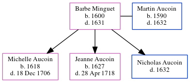

Barbe Aucoin (née Minguet) 1600 - 1631
[ Home ] | [ Calendar ] | [ Surnames Index ] | [ Census Index ] | [ Family History ]Barbe Minguet, the 11 times great-grandmother of Michele Copp (née Phillips), was born in La Rochelle, Manche, Basse-Normandie, France in 1600 and married Martin Aucoin (with whom she had 3 children: Michelle, Jeanne and Nicholas) in Fr1.
She died in La Rochelle in 1631.
Children
- Michelle was born in 1618
- Jeanne was born in 1627
Citations
- U.S. and International Marriage Records, 1560-1900 Online publication - Provo, UT, USA: The Generations Network, Inc., 2004.Original data - This unique collection of records was extracted from a variety of sources including family group sheets and electronic databases. Originally, the information was deriv
Family Tree
Generated by ged2site. Last updated on Jun 6, 2024